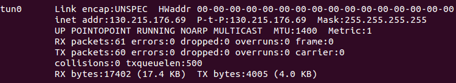

How to Obtain Gurobi Academic License Off Campus¶
(Updated on 08/22/2016 for Ubuntu 14.04 64-bit)
To use Gurobi, you need to obtain an free academic license. It’s easy to do so when your computer is connected to the campus network. But if not, you will need to solve two problems to get one: connecting to campus network through VPN and route the network traffic through the VPN channel.
Connecting to Campus Network¶
WPI uses Juniper Network Connect Client to establish a VPN channel. For Ubuntu 64-bit, it was difficult to make the client work before this official solution is provided recently.
Here is a brief summary:
What you need:
- 64-bit Mozilla Firefox browser
- Java plug-in for Firefox
- IcedTea-Web-plug-in
Configuration steps:
- Install 64-bit Firefox if you don’t have one.
- Install IcedTea-Web-plug-in
$ sudo apt-get install openjdk-7-jre icedtea-7-plugin
- Install the 32-bit Java version.
$ sudo apt-get install openjdk-7-jre:i386
- Add symbolic link to update-alternatives
$ sudo ln -s /usr/bin/update-alternatives /usr/sbin/
- Keep the default Java version to be the 64-bit one.
$ sudo update-alternatives --config java
Now you can try to connect the VPN. Refer to the original document for more details if you get any problems. Don’t forget to use Firefox to connect to https://vpn.wpi.edu. Chrome will not work.
Route Network Traffic through VPN Channel¶
Use ifconfig command to check if you have successfully connected to VPN. You should see something like this:
{kind=link}
If you try to obtain the license now, you would probably find that the Gurobi website still complains that you’re not in a campus network. This is because the network traffic from your computer is not going through the VPN channel, even if you’ve established one.
- Find the remote gateway IP address:
$ route -n
You should be able to find an IP address starting from “130.215.*.*” via interface “tun0”.
- Delete the default gateway and add the new one:
$ sudo ip route del default via 192.168.1.1
$ sudo ip route add default via 130.215.*.*
Note that you need to change the ip addresses according to your actual situation. Some routers may use “192.168.1.254” as the default gateway ip. When you finish, you need to change the default gateway back. Otherwise when you disconnect the VPN channel, you might not be able to connect to the Internet. This method works on my computer. If you encounter any problems, check the reference for more information..
- [1] http://www.cyberciti.biz/faq/how-to-find-gateway-ip-address/
- [2] http://www.cyberciti.biz/tips/configuring-static-routes-in-debian-or-red-hat-linux-systems.html
- [3] http://superuser.com/questions/794922/routing-all-traffic-over-vpn-on-ubuntu-linux
- [4] http://kb.juniper.net/InfoCenter/index?page=content&id=KB25230
- [5] https://wrjih.wordpress.com/2015/09/05/juniper-vpn-msjnc-64-bit-ubuntu-14-04/